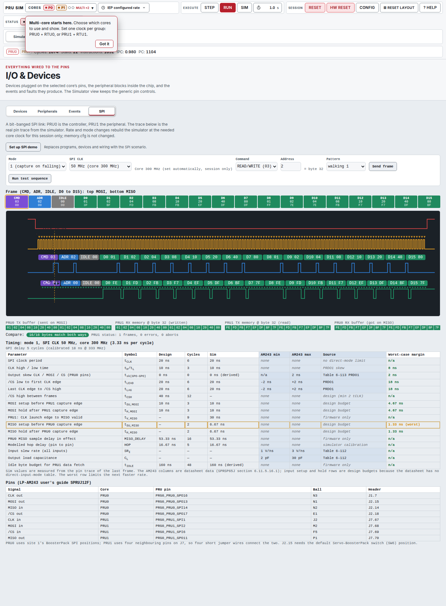
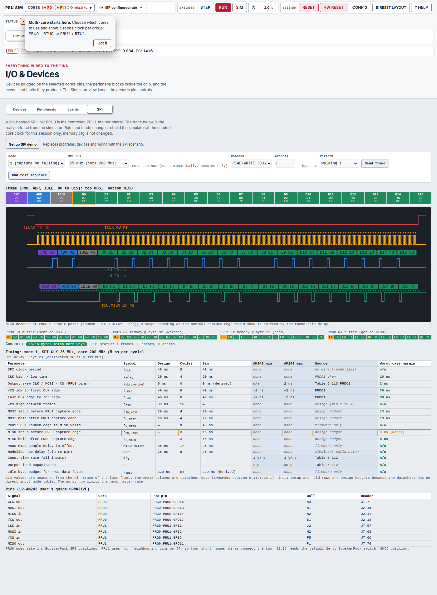
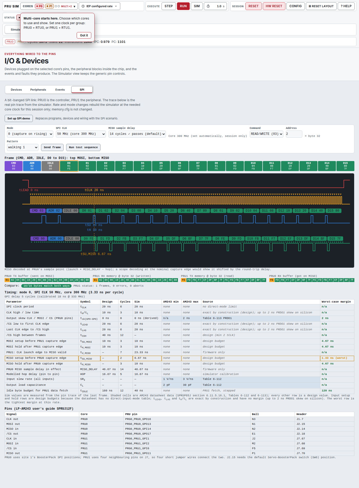

Session Report · pru-simulator
Verbatim, as given at the start of the session (2026-11-04 21:29:36 CET), typos kept (“typcial”, “seperate”, “loacations”):
Source: first user message of session 248cc36f; the later instruction “if you hit a usage limit, retry every 15 minutes until it clears” came at 23:23 CET.
How the prompt was interpreted
PRU1 “MISO as inputs and MOSI as output”
Read as a slip. Confirmed by the user (“yes PRU1 reads MOSI”): PRU1 reads CLK, MOSI and /CS and drives MISO.
“16 byte address”
The one address byte indexes 16-byte blocks (user: 1 → 16, 2 → 32). Byte offset = address × 16.
“Mbit”
Taken as the SPI clock in MHz (10 to 50 MHz).
“Set on rising, capture on falling edge”
That is SPI mode 1, not the usual mode 0. The user asked for both modes 0 and 1.
“IO&Device tab”, “best model for different tasks”
An SPI view in the simulator’s IO and Device area, with scope, byte decode, memory panels and timing table. Models were chosen per task: Opus for the firmware, the timing-critical runtime and the reviews of those; Sonnet for the protocol model and UI work and their reviews; Haiku for the user-guide text.
The prompt asked for a documented development flow, so the session followed the repo’s superpowers workflow: brainstorm with the user, write the design down, have it checked, plan it as tasks, then build with an implementer and a reviewer per task, and finish with a review of the whole branch.
Brainstorm. Questions to the user are the 12 clarifications in section 3. The visual companion showed three layouts for the SPI view: A (scope on top, memory below), B (scope left, memory and timing right) and C (decoded list first). The user chose A “but miss timing”, which became A + timing (v2). Asking for AM243 min/max values and pins led to A + timing + AM243 limits and pins (v3), which was then fixed in the spec. Two web-fetch dispatches read the AM243x datasheet and the LP-AM243 guide (section 6).
Design doc and builder check. The spec (docs/superpowers/specs/2026-11-04-spi-pru0-pru1-design.md) landed at 22:07 CET. A fresh Opus subagent checked it as a builder would and returned 3 questions: the controller settled 2, and the remaining one, how much I/O latency “proven” should assume, went to the user, who answered with a silicon measurement (clarification 12). The plan landed at 22:12.
Subagent-driven build. Eight tasks: (1) per-core GPI input delay, (2) protocol model, rate table, patterns, bus monitor, timing measurement, (3) PRU0 controller firmware and runtime, (4) PRU1 edge-polling firmware, (5) rate sweep and timing doc, (6) scenario, rate rebuild and websocket actions, (7) SPI view, (8) user guide, whole-branch review, session report. Each task: implementer, task reviewer, and fix rounds resumed on the same implementer with a re-review (section 5). The controller session recorded 23 numbered rulings (section 4).
Whole-branch review and fix wave. An Opus review of 46efc4a..3620e11 found 1 critical and 7 important issues. A fresh Opus implementer fixed 15 items plus Ruling R18a, and a scoped Opus re-review found all addressed with one minor left (a duplicated sentence in the user guide, fixed with this report).
All 12 from spec section 2, in the order they came up.
| # | Question / issue | User’s answer | Effect |
|---|---|---|---|
| 1 | Who sees this and what should they take away? | Theme “vibe coding realtime interfaces”: show the SPI can be coded and is easy to demonstrate in the simulator. open-pru + AM243 LP test is step 2. | Scope is the simulator. Real pins and real timing are kept for step 2. |
| 2 | Prompt had PRU1 with MISO as input and MOSI as output | “yes PRU1 reads MOSI” | PRU1: CLK, MOSI and /CS in; MISO out. |
| 3 | “Set rising / capture falling” is mode 1, not mode 0 | Support both modes 0 and 1 | Mode selector. |
| 4 | 50 MHz at 200 MHz is only 4 cycles/bit | Not needed at 200 MHz; use a higher core clock | 50 MHz is only offered on a faster core clock (in the sweep: 300 MHz, k=3). |
| 5 | “16 byte address” vs one address byte | Address byte points to 16-byte blocks: 1 → 16, 2 → 32, … | Byte offset = addr × 16. |
| 6 | Scope view | Should also decode byte by byte like PicoScope | Byte boxes over MOSI and MISO. |
| 7 | Layout for the SPI view (3 mockups) | Picked A (scope on top, memory below), “but miss timing” | Timing arrows on the trace and a timing table were added. |
| 8 | Timing table | Add min/max for the AM243 pins | AM243 datasheet and LP guide were fetched. |
| 9 | Pins and table as proposed | “yes pins and table work” | Pin table fixed in the spec. |
| 10 | Edge-polling vs clock-locked peripheral for top rates | Must be a real edge-polling peripheral. Hint: sample clock and data in one masked R31 compare, and sample based on the previous edge. | Anti-goal: no clock-locked shortcut. The masked R31 read is used. The previous-edge hint was not used (Ruling R20). |
| 11 | Playback of protocol, rates, patterns, report and models | “all good” | Protocol, rates, patterns, report content and model plan as written. |
| 12 | Builder check: simulator has 0-cycle GPI/GPO latency; what delay should “proven” assume? | Silicon measurement: at 333 MHz, wbs input_pin + set output_pin shows 18 ns from async input edge to output edge on an external scope | Calibrated pin-to-pin hop delay of 5 core cycles in the simulator (Ruling R6, first estimated as 4). The controller gets a MISO sample delay. |
The user’s own technique hints (clarification 10): sample clock and data together with one masked R31 read, and sample from the previous edge. The first is in the PRU1 firmware. The second is a deviation, see R20. The silicon measurement (clarification 12) is the only timing number in the project that comes from real hardware: 18 ns for wbs + set at 333 MHz is 6 core cycles, against 1 cycle in the simulator with no delay, so the simulator adds 5.
Every ruling the controller session made, with the reason and the cost if it turns out wrong. R7a, R9a and R18a amend R7, R9 and R18.
Plan pre-flight (before Task 1)
State push key is io.spi_demo
Follows the existing SSI pattern (io_section["spi_demo"] next to ssi_demo). Cost if wrong: rename in 2 places.
SpiLinkRuntime.reload_controller(cfg) may be added
Reassembles PRU0 only and keeps PRU1, wires and monitor; needed to prove the peripheral edge-polls rather than being clock-locked. Cost if wrong: a small API addition.
Scenario default is mode 1 at 25 MHz if supported, else the fastest supported mode-1 rate at or below 25 MHz
The spec names 25 MHz at 200 MHz only as a mockup example. Cost if wrong: a different default rate.
apply_scenario validates config per scenario; SPI config is {mode, spi_mhz}
Cost if wrong: refactor of one function. Amended by R17.
If the Task 7 implementer cannot drive a browser, the controller does the browser check
Verification only, no fixes. Cost if wrong: only time. (In practice the implementer ran a headless-Chrome check and took the screenshots.)
Timing model and calibration
Hop delay is 5 cycles, not 4
Single-stepping gave 1 cycle native for wire→wbs→set at 333 MHz, so the user’s 18 ns (6 cycles) needs +5. The 4 came from the controller’s own 1-2 cycle estimate. Cost if wrong: one cycle more conservative, possibly one fewer supported top rate.
tSU,MISO and tH,MISO are measured against PRU0’s actual sample point
Not the nominal capture edge: with a sample delay these differ. Setup = sample − MISO change of that bit; hold = next MISO change − sample. Cost if wrong: one function’s measurement reference. (A review finding, see section 5.)
Pin-referred sample point = launch + miso_delay − hop delay
That is the pin state PRU0’s delayed R31 read actually sees (amends R7). measure_timing takes hop_delay. Passing rows must not show negative MISO hold. Cost if wrong: regenerate tables.
Rows not measured from edges are marked derived and never count as worst
tsk (the simulator models no pad skew) and tIDLE (a design value until measured). Cost if wrong: two rows’ labelling.
miso_delay holes and default 0 stay; the window value is picked from realisable values nearest the middle
Realisable means controller_delay_ok (d mod 2k not 0 or k, pipelining at most 6 bits). Cost if wrong: one helper in the sweep.
Equidistant candidates: take the earlier one
Pin-referred timing gives a balanced 2+2 cycles against a 1-cycle hold. 165 rows’ miso_delay moved by 1-2; no pass or window changed. Cost if wrong: a tie-break rule.
reload_controller leaves one consistent time base
Both cores’ cycle counters and GPI delay histories are reset together and the monitor is cleared, so PRU0 and PRU1 edges share one clock. Cost if wrong: a reload API detail.
The controller’s real inter-frame /CS-high gap is accepted (135-249 cycles)
The strict 2 tCLK gap is proven by Task 4’s direct-stimulus tests. First quoted as 144-231, corrected from the generated doc. Cost if wrong: the demo cannot show a minimum-gap burst.
pru_io/spi_rates.json holds summary rows only
It is pushed to the UI (58 KB instead of 480 KB); full tables live in docs/spi_link_timing.md. Cost if wrong: file layout.
Server, UI and honesty of labels (review-driven)
Leaving the SPI scenario restores the configured core clock
If spi_setup changed it, by a fresh rebuild from memory.cfg values without writing memory.cfg. Cost if wrong: one extra rebuild on leaving.
The 58 KB supported table is sent once, not on every state push
Sent with scenario_loaded / spi_setup responses or an spi_supported message; the monitor keeps only the last 8 frames. Cost if wrong: payload layout.
The SPI view decodes MISO at PRU0’s sample point everywhere, with a visible note
The backend monitor’s capture-edge decode is not shown. Cost if wrong: one display choice; a logic-analyzer view could be added.
Editor-visible firmware assembles standalone
Each .asm carries a default config block between markers that render_header replaces at load. The simulator assembler evaluates $isdefed as false, so .if guards cannot be used. Cost if wrong: header mechanism.
MISO sample delay is selectable in the UI
spi_setup takes an optional miso_delay validated with controller_delay_ok; the control lists realisable values with the passing window marked (spec 5.1; amends R4). Cost if wrong: one control.
tLEAD, tLAG and tH/tL get no AM243 min/max; only datasheet-sourced cells are tinted
Spec anti-goal: no number presented as a datasheet limit when the datasheet gives none. Margin was first defined as measured − design minimum − 2 ns PRDO1 skew. Cost if wrong: labelling.
Those three rows are exact by construction: margin None, excluded from worst
The literal R18 made a self-imposed minimum the worst row everywhere. Source text: “exact by construction (design); up to 2 ns PRDO1 skew on silicon”. Worst returns to tSU,MISO. Cost if wrong: labelling of three rows.
The “PRU1 needs 9 (mode 1) / 5 (mode 0) cycles of /CS high at k=3” claim gets stimulus tests
Pass at 9/5, lost frame at 8/4; otherwise the claim is removed. No untested cycle claims. Cost if wrong: a doc line.
Reset / HW Reset inside the SPI scenario re-applies the scenario
At the current session config, so the demo survives with a fresh time base, matching SSI. Only program loads and other scenarios leave it. Cost if wrong: reset semantics.
Dropping PRU0 or PRU1 from the execution-core selection leaves the SPI scenario
Tested. Cost if wrong: a leave path.
p1_cycles_per_bit stays the minimum; p1_bit_cycles_max is added
“Limiting” text uses the max (6 cycles in both modes). Cost if wrong: a field name and some wording.
Deviation from the user’s hint
Deviation: “sample from the previous edge” is NOT used
Spec 5.2 carried the user’s technique hint. It was optional (“you can also”), and the two-poll design (one masked R31 read per edge) already reaches 50 MHz in both modes and is more robust against jitter and stretched clocks. Documented in docs/spi_link.md, here, and surfaced to the user. Cost if wrong: an unused optimisation that would give PRU1 more slack in mode 1, which has 0 cycles of slack per byte at the top rate.
Every task had a separate reviewer; every task needed at least one fix round or ruling before it was accepted (section 8 shows the cost).
Task 1 (opus review: approved)
No defects beyond Ruling R6 (applied in the same task). Minors deferred: the UI register panel showed the undelayed R31 (fixed in Task 6), delay reset even when unchanged, history masked to 20 bits while the pin state is not. Pre-existing baseline failures were confirmed on a clean HEAD worktree.
Task 2 (sonnet review: needs fixes)
MISO timing measured against the nominal edge, not PRU0’s sample point
Led to R7. No MISO-row tests existed.
Negative setup was hidden as None
A MISO change after the sample point must show as negative setup. tIDLE and tsk were also not measured; marked derived (R8).
Task 3 (opus review: needs fixes)
MISO pipelining depth 4-6 untested
Data for Q=4..6 bits in flight is now proven.
/CS was low at load
/CS (R30 = 0) was low before the first instruction; now idle high, plus monitor re-attach and close fixes.
Task 4 (opus review: needs fixes)
PRU1 dropped a whole frame at a spec-minimum /CS gap
With only 2 tCLK of /CS high at k up to 6 or 7 the peripheral missed the next frame silently. Fix: commit takes 10 cycles; minimum gap at k=3 is 9 cycles (mode 1) / 5 (mode 0).
Task 5 (opus review: approved; pre-review fixes by the controller’s rulings)
Reload broke the monitor time base
PRU0 reset its cycle counter but PRU1 did not, so edges were stamped on different clocks (R10).
Pin-referred MISO sample
Passing rows showed −2 ns hold (R7a).
480 KB rate table pushed to the UI
Reduced to 58 KB summary rows (R12).
Task 6 (sonnet review: needs fixes)
Clock not restored on leaving the scenario
R13.
Supported table sent on every push
R14.
Monitor edges unbounded
Capped to the last 8 frames.
Task 7 (sonnet review: needs fixes)
Frame-strip MISO contradicted the scope
Strip showed the monitor’s capture-edge decode (3F BF FD …) while scope boxes and PRU0 RX showed FE FD FB … (R15). Also an io-tab list in ui_chrome broke, and cursor labels overlapped.
Final whole-branch review (opus: with fixes, 1 critical, 7 important)
Critical: scenario tests depended on the user’s uncommitted memory.cfg (200 MHz)
The tests passed only on this machine’s working tree. Fix: scenario tests own their clock.
Editor firmware did not assemble standalone
R16.
MISO delay not selectable
Spec 5.1 required it; R17.
Non-datasheet numbers sat in datasheet columns
R18, later R18a.
Untested cycle claim
R19.
Reset tore down the demo
R21.
Core-selection leave path
R22.
Limiting cycle count used the minimum
R23.
R18 literal reading made a self-imposed minimum the worst row
Found while retaking screenshots; corrected by R18a (re-review addressed all 15 items and R18a).
Also fixed in the wave: tIDLE measured fetch shown in the UI, a UI note that the worst row limits the next faster rate, a timing-doc contradiction on cycles per edge, clientX 0 in spi.js, put_clock_speed persisting a session clock, and a runnable Python example via tools/spi_sweep.make_config.
AM243x datasheet SPRSP65J (rev. June 2026)
Section 6.11.5.16.1, the PRU timing tables: Table 6-112 (timing conditions: input slew 1-3 V/ns, output load 2-30 pF) and Table 6-113 (direct output mode, PRDO1: output skew between GPO pins at most 2 ns). Key finding: there is no direct-input-mode timing table, so the input setup and hold rows are design budgets, not datasheet limits.
LP-AM243 user’s guide SPRUJ12F (Jan 2024)
Tables 4-11 to 4-14 and B-2: which PRU pins reach the BoosterPack headers; used to fix the pin table (spec section 7).
The user’s 18 ns scope measurement
At 333 MHz, wbs input_pin followed by set output_pin: 18 ns from asynchronous input edge to output edge on an external scope. This sets the 5-cycle hop delay (R6).
WebFetch could not decode either PDF, so both were extracted locally with pdftotext and read from the text. Board trace and jumper-wire delay are not modelled (docs/spi_link_timing.md).
From pru_io/spi_rates.json (generated 2026-11-05T06:08:39Z, sweep wall time 127.7 s) and docs/spi_link_timing.md.
Supported means zero byte errors and every step right at the 5-cycle hop delay on both cores, so the table below shows the 106 hop-5 rows (53 combinations per mode); the 106 hop-0 rows are informational. Core clocks are 200, 225, 250, 300 and 333 MHz; SPI clock = core / 2k with k = 3 to 16, 10 to 50 MHz, never 50 MHz at 200 MHz. The test sequence covers WRITE, READ and R/W with five patterns (a5_5a, walking1, walking0, count, toggle), an unknown command, an out-of-range address, a mid-frame /CS abort and back-to-back frames.
PRU1 cycles per data bit: mode 0 min 4, max 6; mode 1 min 5, max 6 (max includes gap work; single-stepped, same in every row because PRU1 waits for each edge). Steady data byte 40 (mode 0) / 47 (mode 1) cycles, longest byte 47 / 48, idle-byte TX fetch 12.
Fastest supported rate: 50.000 MHz at 300 MHz core, k=3, in both modes. Mode 0: MISO window 13..17 (4 passing values), PRU1 slack 1 of 48 cycles per byte. Mode 1: window 16..17 (2 values), PRU1 slack 0 of 48. Limiting factors: PRU1 itself is exactly at its limit at k=3 in mode 1 (bit budget 2k = 6 cycles against a 6-cycle limiting bit, no slack per byte), and the MISO window is narrowest there. A faster rate would need k below 3 or more than 50 MHz, outside the requested range.
Worst margins: tSU,MISO +1.33 ns (mode 0, 300 MHz, k=3) and +1.33 ns (mode 1, 300 MHz, k=3); the next worst are +2.00 ns at 250 MHz, +2.44 at 225, +3.00 at 200 (k=3 in each). Per-row worst margins are in the table (exact-by-construction rows are excluded, R18a).
Cell format: chosen miso_delay [passing window lo..hi] (number of passing delay values). Margin is the worst measured margin in ns. All rows shown pass; rows ordered by SPI clock.
| Core MHz | k | SPI MHz | Mode 0: delay [window] (n) | Mode 0 worst ns | Mode 1: delay [window] (n) | Mode 1 worst ns |
|---|---|---|---|---|---|---|
| 200 | 10 | 10.000 | 21 [12..31] (18) pass | 43.00 | 23 [15..32] (16) pass | 38.00 |
| 300 | 15 | 10.000 | 26 [12..41] (28) pass | 44.67 | 29 [16..42] (26) pass | 38.00 |
| 225 | 11 | 10.227 | 21 [12..32] (20) pass | 38.00 | 24 [15..34] (18) pass | 38.00 |
| 333 | 16 | 10.406 | 27 [12..43] (30) pass | 43.05 | 29 [15..44] (28) pass | 40.04 |
| 250 | 12 | 10.417 | 23 [13..35] (22) pass | 42.00 | 25 [15..35] (20) pass | 38.00 |
| 300 | 14 | 10.714 | 25 [12..39] (26) pass | 41.33 | 27 [15..40] (25) pass | 38.00 |
| 333 | 15 | 11.100 | 26 [12..41] (28) pass | 40.04 | 29 [16..42] (26) pass | 34.04 |
| 200 | 9 | 11.111 | 20 [12..29] (16) pass | 38.00 | 22 [15..30] (14) pass | 33.00 |
| 225 | 10 | 11.250 | 21 [12..31] (18) pass | 38.00 | 23 [15..32] (16) pass | 33.56 |
| 250 | 11 | 11.364 | 21 [12..32] (20) pass | 34.00 | 24 [15..34] (18) pass | 34.00 |
| 300 | 13 | 11.538 | 24 [12..37] (24) pass | 38.00 | 27 [15..38] (23) pass | 31.33 |
| 333 | 14 | 11.893 | 25 [12..39] (26) pass | 37.04 | 27 [15..40] (25) pass | 34.04 |
| 200 | 8 | 12.500 | 19 [12..27] (14) pass | 33.00 | 21 [15..28] (12) pass | 28.00 |
| 225 | 9 | 12.500 | 20 [12..29] (16) pass | 33.56 | 22 [15..30] (14) pass | 29.11 |
| 250 | 10 | 12.500 | 21 [12..31] (18) pass | 34.00 | 23 [15..32] (16) pass | 30.00 |
| 300 | 12 | 12.500 | 23 [13..35] (22) pass | 34.67 | 25 [15..35] (20) pass | 31.33 |
| 333 | 13 | 12.808 | 24 [12..37] (24) pass | 34.04 | 27 [15..38] (23) pass | 28.03 |
| 300 | 11 | 13.636 | 21 [12..32] (20) pass | 28.00 | 24 [15..34] (18) pass | 28.00 |
| 333 | 12 | 13.875 | 23 [13..35] (22) pass | 31.03 | 25 [15..35] (20) pass | 28.03 |
| 250 | 9 | 13.889 | 20 [12..29] (16) pass | 30.00 | 22 [15..30] (14) pass | 26.00 |
| 225 | 8 | 14.062 | 19 [12..27] (14) pass | 29.11 | 21 [15..28] (12) pass | 24.67 |
| 200 | 7 | 14.286 | 18 [12..25] (12) pass | 28.00 | 20 [15..26] (11) pass | 23.00 |
| 300 | 10 | 15.000 | 21 [12..31] (18) pass | 28.00 | 23 [15..32] (16) pass | 24.67 |
| 333 | 11 | 15.136 | 21 [12..32] (20) pass | 25.03 | 24 [15..34] (18) pass | 25.03 |
| 250 | 8 | 15.625 | 19 [12..27] (14) pass | 26.00 | 21 [15..28] (12) pass | 22.00 |
| 225 | 7 | 16.071 | 18 [12..25] (12) pass | 24.67 | 20 [15..26] (11) pass | 20.22 |
| 333 | 10 | 16.650 | 21 [12..31] (18) pass | 25.03 | 23 [15..32] (16) pass | 22.02 |
| 200 | 6 | 16.667 | 17 [13..23] (10) pass | 23.00 | 19 [15..23] (8) pass | 18.00 |
| 300 | 9 | 16.667 | 20 [12..29] (16) pass | 24.67 | 22 [15..30] (14) pass | 21.33 |
| 250 | 7 | 17.857 | 18 [12..25] (12) pass | 22.00 | 20 [15..26] (11) pass | 18.00 |
| 333 | 9 | 18.500 | 20 [12..29] (16) pass | 22.02 | 22 [15..30] (14) pass | 19.02 |
| 225 | 6 | 18.750 | 17 [13..23] (10) pass | 20.22 | 19 [15..23] (8) pass | 15.78 |
| 300 | 8 | 18.750 | 19 [12..27] (14) pass | 21.33 | 21 [15..28] (12) pass | 18.00 |
| 200 | 5 | 20.000 | 16 [12..21] (8) pass | 18.00 | 19 [16..22] (6) pass | 8.00 |
| 333 | 8 | 20.812 | 19 [12..27] (14) pass | 19.02 | 21 [15..28] (12) pass | 16.02 |
| 250 | 6 | 20.833 | 17 [13..23] (10) pass | 18.00 | 19 [15..23] (8) pass | 14.00 |
| 300 | 7 | 21.429 | 18 [12..25] (12) pass | 18.00 | 20 [15..26] (11) pass | 14.67 |
| 225 | 5 | 22.500 | 16 [12..21] (8) pass | 15.78 | 19 [16..22] (6) pass | 6.89 |
| 333 | 7 | 23.786 | 18 [12..25] (12) pass | 16.02 | 20 [15..26] (11) pass | 13.02 |
| 200 | 4 | 25.000 | 15 [13..19] (6) pass | 8.00 | 17 [15..19] (4) pass | 8.00 |
| 250 | 5 | 25.000 | 16 [12..21] (8) pass | 14.00 | 19 [16..22] (6) pass | 6.00 |
| 300 | 6 | 25.000 | 17 [13..23] (10) pass | 14.67 | 19 [15..23] (8) pass | 11.33 |
| 333 | 6 | 27.750 | 17 [13..23] (10) pass | 13.02 | 19 [15..23] (8) pass | 10.01 |
| 225 | 4 | 28.125 | 15 [13..19] (6) pass | 6.89 | 17 [15..19] (4) pass | 6.89 |
| 300 | 5 | 30.000 | 16 [12..21] (8) pass | 11.33 | 19 [16..22] (6) pass | 4.67 |
| 250 | 4 | 31.250 | 15 [13..19] (6) pass | 6.00 | 17 [15..19] (4) pass | 6.00 |
| 333 | 5 | 33.300 | 16 [12..21] (8) pass | 10.01 | 19 [16..22] (6) pass | 4.01 |
| 200 | 3 | 33.333 | 14 [13..17] (4) pass | 3.00 | 16 [16..17] (2) pass | 3.00 |
| 225 | 3 | 37.500 | 14 [13..17] (4) pass | 2.44 | 16 [16..17] (2) pass | 2.44 |
| 300 | 4 | 37.500 | 15 [13..19] (6) pass | 4.67 | 17 [15..19] (4) pass | 4.67 |
| 333 | 4 | 41.625 | 15 [13..19] (6) pass | 4.01 | 17 [15..19] (4) pass | 4.01 |
| 250 | 3 | 41.667 | 14 [13..17] (4) pass | 2.00 | 16 [16..17] (2) pass | 2.00 |
| 300 | 3 | 50.000 | 14 [13..17] (4) pass | 1.33 | 16 [16..17] (2) pass | 1.33 |



The controller session ran on Opus 5.5 throughout and delegated all code work. Token counts for dispatches are as reported by the harness in docs/reports/spi-pru-link-dispatch-log.csv. A resumed agent (fix rounds, and implementers resumed after a usage limit) reports cumulative tokens for its whole life, so a fix-round row includes the implementer row above it: the sum below double-counts those and is an upper bound for the work, not a billing figure. The model column is as dispatched; the two web-fetch rows used the web-fetch agent’s default model, which the log does not record.
Per dispatch
| Phase | Task | Role | Model | Tokens | Duration | Tool uses |
|---|---|---|---|---|---|---|
| brainstorm | - | web-fetch AM243x datasheet | web-fetch | 1m 26s | 3 | |
| brainstorm | - | web-fetch LP-AM243 guide | web-fetch | 0m 28s | 2 | |
| brainstorm | - | builder check of design doc | Opus | 2m 22s | 16 | |
| build | 1 | implementer | Opus | 6m 07s | 36 | |
| build | 1 | implementer fix (ruling R6) | Opus | 0m 35s | 4 | |
| build | 1 | task reviewer | Opus | 1m 07s | 6 | |
| build | 2 | implementer | Sonnet | 4m 58s | 14 | |
| build | 2 | task reviewer | Sonnet | 0m 45s | 3 | |
| build | 2 | implementer fix round 1 (a+b) | Sonnet | 2m 04s | 13 | |
| build | 2 | re-review fix round 1 | Sonnet | 0m 19s | 2 | |
| build | 3 | implementer | Opus | 36m 03s | 54 | |
| build | 3 | task reviewer | Opus | 2m 53s | 6 | |
| build | 3 | implementer fix round 1 | Opus | 5m 01s | 13 | |
| build | 3 | re-review fix round 1 | Sonnet | 0m 21s | 4 | |
| build | 4 | implementer | Opus | n/a | n/a | |
| build | 4 | task reviewer | Opus | 3m 57s | 20 | |
| build | 4 | implementer fix round 1 | Opus | 13m 15s | 28 | |
| build | 4 | re-review fix round 1 | Opus | 1m 45s | 8 | |
| build | 5 | implementer | Opus | 20m 03s | 50 | |
| build | 5 | implementer pre-review fix (R10/R7a/R12) | Opus | 21m 44s | 32 | |
| build | 5 | task reviewer | Opus | 4m 14s | 17 | |
| build | 6 | implementer | Sonnet | 9m 12s | 26 | |
| build | 6 | task reviewer | Sonnet | 1m 08s | 9 | |
| build | 6 | implementer fix round 1 | Sonnet | 6m 42s | 9 | |
| build | 6 | re-review fix round 1 | Sonnet | 0m 22s | 3 | |
| build | 7 | implementer | Sonnet | 7m 23s | 39 | |
| build | 7 | task reviewer | Sonnet | 0m 43s | 10 | |
| build | 7 | implementer fix round 1 | Sonnet | 2m 32s | 12 | |
| build | 7 | re-review fix round 1 | Sonnet | 0m 20s | 5 | |
| build | 8 | docs implementer | Haiku | 4m 13s | 37 | |
| build | 8 | final whole-branch review | Opus | 9m 40s | 57 | |
| build | 8 | final fix wave implementer (incl. R18a) | Opus | 29m 46s | 70 | |
| build | 8 | final fix wave re-review | Opus | 2m 13s | 18 |
Task 4 implementer duration is n/a: the run was split by the first usage-limit stall, so its duration is not comparable. Fix-round and implementer rows with cumulative tokens: tasks 1, 2, 3, 4, 5 (pre-review fix), 6, 7 and the final fix wave.
Totals per model (dispatches)
| Model | Dispatches | Tokens | Sum of durations |
|---|---|---|---|
| Opus | 17 | 2,710,545 | 2h 40m 48s |
| Sonnet | 13 | 1,005,744 | 36m 49s |
| Haiku | 1 | 140,216 | 4m 13s |
| web-fetch default (model not recorded) | 2 | 114,747 | 1m 54s |
| All dispatches | 33 | 3,971,252 | 3h 23m 44s |
Controller session (Opus 5.5), from the transcript
Sum of the usage fields of the 214 assistant API messages in session 248cc36f (211 by claude-opus-5-5, 3 synthetic) over the whole transcript, which starts at 20:47:25 CET (19:47:25Z) with earlier work; the SPI prompt arrived at 21:29:36 CET. The totals therefore include the 42 minutes before the SPI request and are an upper bound for this project.
Timeline, from git commit times
Elapsed is the time between landings. The two usage-limit stalls are shown separately and subtracted.
| Step | Landed (CET, 2026-11-04/05) | Elapsed | Stall | Net |
|---|---|---|---|---|
| Brainstorm + design doc | prompt 21:29:36 → ae0a3a7 · 22:07:15 | 37m 39s | – | 37m 39s |
| Implementation plan | e033a87 · 22:12:00 | 4m 45s | – | 4m 45s |
| 1 · GPI input delay | c2c445c · 22:26:01 | 14m 01s | – | 14m 01s |
| 2 · Protocol, rates, monitor | 6787cbf · 22:35:46 | 9m 45s | – | 9m 45s |
| 3 · PRU0 controller | 2fd1a25 · 23:21:15 | 45m 29s | – | 45m 29s |
| 4 · PRU1 peripheral | 81d5506 · 02:04:44 | 2h 43m 29s | −1h 48m 12s | 55m 17s |
| 5 · Rate sweep, timing doc | 1557844 · 02:50:11 | 45m 27s | – | 45m 27s |
| 6 · Scenario, websocket | 7a4c66f · 03:13:30 | 23m 19s | – | 23m 19s |
| 7 · SPI view | b34174c · 03:26:38 | 13m 08s | – | 13m 08s |
| 8a · User guide (haiku) | 3620e11 · 03:31:53 | 5m 15s | – | 5m 15s |
| 8b · Whole-branch review, ledger fixes | 89cb9ad · 03:43:05 | 11m 12s | – | 11m 12s |
| 8c · Final fix wave + R18a + screenshots | 94cc42f … 7ebca7c · 07:09:27 | 3h 26m 22s | −2h 56m 20s | 30m 02s |
| Prompt → last commit | 9h 39m 51s | −4h 44m 32s | 4h 55m 19s |
Arithmetic. Prompt 21:29:36 → last session event 07:13:20 = 9h 43m 44s (35024 s). Stall 1: limit hit 23:53:23 (task 4 implementer failed with HTTP 429, transcript), reset 01:40, implementer resumed 01:41:35 (ledger): 1h 48m 12s (6492 s). Stall 2: hit 03:45:33, reset 06:40, resumed 06:41:53 (ledger): 2h 56m 20s (10580 s). Active = 35024 − 6492 − 10580 = 17952 s = 4h 59m 12s. In the timeline table, the first landing (ae0a3a7, 22:07:15) is 37m 39s after the prompt and the last (7ebca7c, 07:09:27) is 9h 39m 51s after it; the 3m 53s after the last commit went to the scoped re-review, this report and the usage collation. Stalls are counted from the failing API call to the resumption; waiting retries every 15 minutes (user instruction) happened inside them.
Run in a clean worktree of HEAD 7ebca7c (so the uncommitted memory.cfg and scratch files do not affect it).
pytest: 3 failed, 3486 passed, 2 skipped, 2 xfailed, 1 warning in 342.97s (0:05:42). The 3 failures are the known pre-existing ones (test_clock_speed_endpoint x2, test_server am263x rtu0). tests/test_mcp_stdio_device_sdk.py was excluded: the mcp Python package is not installed on this machine, so collection fails with ModuleNotFoundError (not a project failure; it is not counted above).
Node: each tests/ui_*.test.js run individually (Node 22 rejects --test-isolation=none).
| File | Passed | Failed |
|---|---|---|
| ui_capture_integrity.test.js | 6 | 2 |
| ui_chrome.test.js | 0 | 1 |
| ui_connection_recovery.test.js | 3 | 0 |
| ui_controls.test.js | 1 | 0 |
| ui_cores.test.js | 18 | 0 |
| ui_device_panel_state.test.js | 1 | 0 |
| ui_editor_cores.test.js | 6 | 0 |
| ui_issue_regressions.test.js | 4 | 0 |
| ui_layout_recovery.test.js | 11 | 0 |
| ui_run_flow.test.js | 11 | 0 |
| ui_shared_run_flow.test.js | 10 | 0 |
| ui_shared_selection.test.js | 0 | 6 |
| ui_spi_view.test.js | 11 | 0 |
| ui_ssi_demo.test.js | 1 | 0 |
| ui_workspace.test.js | 1 | 0 |
Known failures, present on main and not from this branch (verified by the implementers and the controller on clean worktrees): pytest test_clock_speed_endpoint (2) and test_server am263x rtu0; node ui_capture_integrity (2), ui_chrome (1, line 214), ui_shared_selection (6). ui_spi_view passes 11 of 11.
Step 2: port to open-pru and test on LP-AM243
Everything above is simulation. The 5-cycle hop delay rests on one scope measurement at 333 MHz; the real MISO window, jumper-wire delay and PRDO1 pad skew (up to 2 ns) are only known on silicon. Note that 50 MHz needs the 300 MHz core clock.
Simulator limitation: GPI stamping
A GPI change that arrives while the reading core is inside a multi-cycle instruction is stamped at the end of that instruction (io_port._record_gpi uses the reader’s cycle counter), so it can land late and two edges inside one stall can merge. Not fixed. The PRU0-PRU1 runs are unaffected (PRU1’s longest in-frame instruction is a 3-cycle lbbo, PRU0 does no loads or stores in a frame); the PRU1 tests use a true-cycle stimulus helper.
PRU1 at its limit in mode 1 at 50 MHz
0 cycles of slack per byte, MISO window of two values. The previous-edge technique from the user’s hint (R20) is the unused optimisation that would give more slack.
Parked or deferred (ledger)
Hop-0 sweep rows show a −2 ns tH,MISO limiting text; hop 0 is informational and supported rates are hop 5 (ruling: stands). put_clock_speed drops a live SpiLinkRuntime without closing it (harmless). The greyed failing-rate UI path is dead because no rate fails. _publish_updates is not called after the leave-time rebuild. Minors deferred from tasks 2 to 6 include a status block written in four word stores (not atomic for host readers) and slow find_miso_window (about 20 s per rate).
Uncommitted user files untouched
memory.cfg, source/program.asm and source/pif_eth_100/ were never staged or edited by this work.